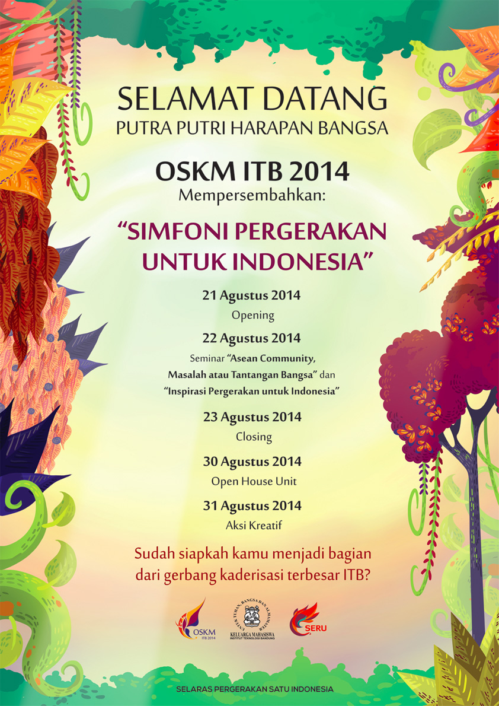
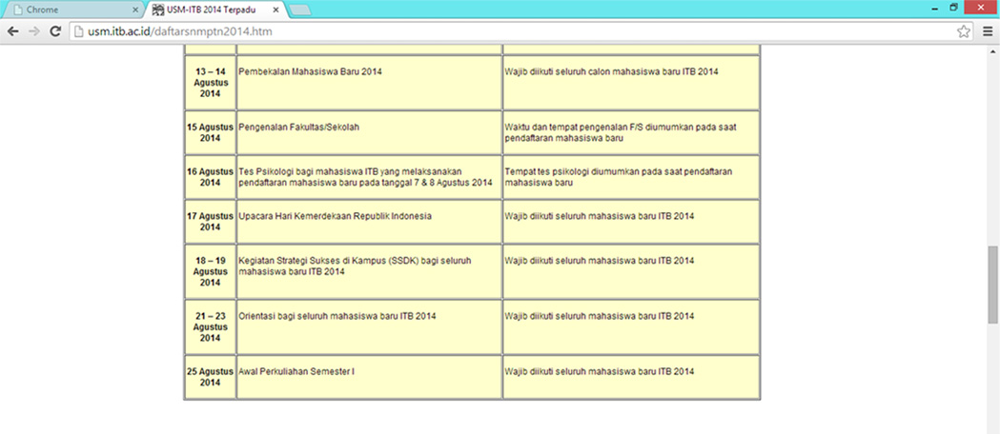
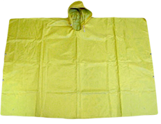

SIMFONI PERGERAKAN UNTUK INDONESIA
Menumbuhkan KEPEKAAN terhadap realitas bangsa dan isu global yang terkait
Mengenalkan IDENTITAS KEMAHASISWAAN
Menanamkan KARAKTER dan HAKEKAT HIDUP berlandaskan ke-Tuhan-an YME
Menanamkan semangat ber-KM ITB sebagai wadah KOLABORASI dan AKTUALISASI DIRI
Melibatkan PARTSIPASI AKTIF elemen kemahasiswaan, masyarakat, dan pemerintahan dalam membangun gerakan yang BERKELANJUTAN dan MENGINSPIRASI
Bentuk Gajah melambangkan kemahasiswaan ITB.
Bentuk kupu-kupu melambagkan hasil metamorfosis mahasiswa ke arah yang lebih siap.
Alur logo melambangkan sebuah simfoni pergerakan bangsa.
Perpaduan warna dan bentuk melambangkan koordinasi.
Warna oranye melambangkan semangat.
Warna kuning melambangkan keaktifan.
Warna ungu melambangkan spiritualitas.
Warna biru melambangkan globalisasi.
Oska memiliki rasa ingin tahu dan budi pekerti luhur yang harus menjadi cerminan bagi para mahasiswa baru peserta OSKM ITB 2014. Oska membantu para mahasiswa baru agar mempunyai softskill yang baik serta menambah pengetahuan dari rasa ingin tahu.
Rafka mencirikan semangat, kepercayaan diri dan pengetahuan. Sifat-sifat yang harus dimiliki mahasiswa untuk menghadapi globalisasi, contohnya AFTA. Para mahasiswa pun diharapkan menjadi generasi yang siap bersaing di dalam pasar bebas.
OSKM ITB adalah kependekan dari Orientasi Studi Keluarga Mahasiswa Institut Teknologi Bandung. OSKM ITB iniadalah sebuah kegiatan kaderisasi awal bagi para mahasiswa baru ITB 2014. OSKM ini bertujuan untuk menyambut para mahasiswa baru serta membekali mereka dengan berbagai wawasan tentang kemahasiswaan. Visi yang diangkat pada kegiatan OSKM ITB 2014 kali ini adalah “Simfoni Pergerakan untuk Indonesia” dimana visi ini muncul dari refleksi terhadap kondisi kemahasiswaan saat ini yang dirasa masih inward looking, fokus pada masalah internal saja. Padahal tantangan yang akan dihadapi Bangsa Indonesia cukup besar seperti ASEAN Community 2015. ASEAN Community 2015 akan menjadi isu utama yang dibahas pada OSKM kali ini.
Tentu saja wajib dong. Bukan dari panitia OSKM yang mewajibkan tetapi dari pihak rektorat yang menuliskan di web usm.itb.ac.id
Catat tanggalnya baik-baik yaa! Tanggal 21-23 Agustus 2014.Lalu pada tanggal 30 Agustus 2014 akandiadakan Open House Unit (OHU) yang juga merupakan rangkaian acara dari OSKM ini. Dan ditutup dengan aksi kreatif pada tanggal 31 Agustus 2014.Untuk tempatnya masih di lingkungan kampus ITB Ganeca kok.
Untuk jamnya akan kami infokan lebih lanjut. Pengalaman dari tahun-tahun sebelumnya OSKM dimulai saat pagi hari dan selesai setelah semua rangkaian acara pada hari itu telah diselesaikan. So, ikutin aja acaranya dengan maksimal yaa!!!
Ini nih yang paling bikin penasaran semua orang :). Tanggal 21 Agustus akan ada Opening lalu tanggal 22 ada seminar dan tanggal 23 ada Closing. Eits bukan itu aja karena pada tanggal 30 Agustus ada Open House Unit dan 31 Agustus ada aksi kreatif. Yang pasti acaranya bakal seru kok, jadi kamu tetep ikutin aja acaranya dengan maksimal. Semoga setelah mengikuti OSKM ITB 2014, para mahasiswa baru bias mendapat wawasan baru tentang kemahasiswaan maupun tentang ITB dan dapat menjadi mahasiswa yang berguna bagi masyarakat, bangsa dan Negara. Amin!
Pastinya rugi banget deeh!!! Kesempatan sekali seumur hidup nih. Kapan lagi kamu bias ketemu temen seangkatan yang jumlahnya lebih dari 3500 orang? Kapan lagi kamu bias kenalan ama kakak panitia yang kece? Kapan lagi kamu bias nonton opening dan closing OSKM yang pastinya wow? Dan banyak kapan lagi kapan lagi lainnya…. Jadi siapkan dirimu untuk OSKM 2014!
Pada waktunya nanti akan kita umumkan, yang pasti sabar aja :) Kalian ngga perlu takut kesulitan cari barang yang perlu dibawa untuk OSKM nanti karena semua barangnya normal aja kok. Selain itu, barang-barang itu berguna untuk kalian sendiri jadi bawa semua barang yang nanti kita umumkan yaaa.
Ngga ada kewajiban bawa topi kok. Tapi kalo waktu upacara kamu mau bawa topi biar ngga kepanasan ya gapapa kok :)
Warna sepatu yang dipakai bebas kok. Mau hitam, putih, pink ataupun warna lain asalkan sepatu itu nyaman dan memudahkan kamu saat OSKM nanti utamanya pada waktu mobilisasi karena nanti bakal banyak banget kegiatannya dan juga mobilisasinya. Kalo bias jangan sepatu yang mudah lepas atau bikin kaki lecet ya.
Wajib pakai seragam dong tapiiii terserah mau seragam apa aja. Boleh pakai putih abu-abu ataupun batik ataupun pramuka. Yang gapunya seragam kaya gitu juga dibebasin kok pake seragam asal SMA nya. Untuk angkatan 2012 dan 2013 boleh pakai putih-hitam ataupun seragamnya jika masih ada.
Sabar dong nanti mendekati OSKM akan kita umumkan kelompok OSKM nya. Pembagian kelompoknya dibagi secara random oleh panitia. Yang asik nih di kelompok nanti bakal ada peserta dari tiap fakultas yang ada di ITB :).
Boleh aja kok. Untuk parkirnya tidak boleh di dalam kampus. Motor sih bias diparkir di lapangan parker sipil, lapangan parkir SR ataupun Saraga .Kalo untuk mobil bisa di lapangan parkir SR, Saraga ataupun di sekitar ITB.
Beasiswa yang ada di ITB tuh bermacam-macam jenisnya dan tentunya syaratnya bermacam-macam pula. Untuk lebih jelasnya silahkan cek di kemahasiswaan.itb.ac.id/beasiswa .
Untuk yang ini coba ditanyakan ke LK langsung yaa karena ini bukan domain dari OSKM.
Tidak ada. Jadi silahkan bagi kalian untuk memakai model ataupun warna rambut yang kalian suka.
Ponco ini adalah suatu jas hujan yang biasanya berbentuk segiempat dengan penutup kepala. Ponco ini juga tidak berlengan. Untuk lebih jelasnya bias dilihat gambar di bawah ini.
Jamal = Jaket Almamater. Nanti waktu daftar ulang akan dibagikan buat kalian semua dan tidak perlu membayar lagi karena itu semua sudah tercakup dalam UKT yang kalian bayarkan.
Bidang xternal merupakan salah satu bidang dalam OSKM ITB 2014. Bidang xternal ini bertugas untuk menghandle hubungan antara OSKM dengan berbagai pihak di luar sana seperti para mahasiswa baru, massa kampus, rektorat, dan lain-lain. Ibaratnya xternal nih menjadi corong buat OSKM. Bidang xternal ini terdiri atas 4 divisi loh... Ada divisi publikasi, intra kampus, dokumentasi dan perizinan.
Tes psikologi itu ngga beda jauh kok ama tes IQ. Tujuannya supaya ITB paham kondisi psikologis para mahasiswanya.
Placement Test Bahasa Inggris ini mirip ama tes TOEFL gitulah. Ada readingnya, grammar dan juga listening. Tapi ngga ada Speaking. Hasil dari Placement Test ini akan digunakan untuk pengelompokkan kelas dalam matakuliah bahasa Inggris, dimana kelas bahasa Inggris dikelompokkan menjadi kelas academic writing, presentation skill dan juga reading comprehension.